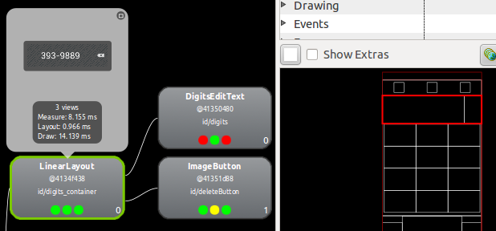

發現 MonkeyRunner 有一些在 官方文件未被提及的 API，基本上都是跟 Hierarchy Viewer 相關的部份，我們姑且稱它為 HierarchyViewer API。
|
|
跟操作 Hierarchy Viewer 這個工具一樣，這些隱藏版的 API 也都 只能搭配特定版本的 Android 系統運作。下面的操作分別在 Android 2.3.3 跟 4.1 的 emulators 上測試過。 |
$ monkeyrunner
Jython 2.5.0 (Release_2_5_0:6476, Jun 16 2009, 13:33:26)
[OpenJDK 64-Bit Server VM (Sun Microsystems Inc.)] on java1.6.0_20
>>> from com.android.monkeyrunner import MonkeyRunner, MonkeyDevice
>>> device = MonkeyRunner.waitForConnection()
>>> [name for name in dir(device) if not name.startswith('_')]  ['DOWN', 'DOWN_AND_UP', 'UP', 'broadcastIntent', 'drag', 'getHierarchyViewer', 'getProperty', 'getPropertyList', 'getRootView', 'getSystemProperty', 'getViewByAccessibilityIds', 'getViewById', 'getViewIdList', 'getViewsByText', 'installPackage', 'instrument', 'press', 'reboot', 'removePackage', 'shell', 'startActivity', 'takeSnapshot', 'touch', 'type', 'wake']
>>>
>>> viewer = device.getHierarchyViewer()
['DOWN', 'DOWN_AND_UP', 'UP', 'broadcastIntent', 'drag', 'getHierarchyViewer', 'getProperty', 'getPropertyList', 'getRootView', 'getSystemProperty', 'getViewByAccessibilityIds', 'getViewById', 'getViewIdList', 'getViewsByText', 'installPackage', 'instrument', 'press', 'reboot', 'removePackage', 'shell', 'startActivity', 'takeSnapshot', 'touch', 'type', 'wake']
>>>
>>> viewer = device.getHierarchyViewer()  07:58:26 E/hierarchyviewer: Unable to get view server version from device emulator-5554
07:59:06 E/hierarchyviewer: Unable to get view server protocol version from device emulator-5554
>>> type(viewer)
<type 'com.android.chimpchat.hierarchyviewer.HierarchyViewer'>
>>> [name for name in dir(viewer) if not name.startswith('_')]
07:58:26 E/hierarchyviewer: Unable to get view server version from device emulator-5554
07:59:06 E/hierarchyviewer: Unable to get view server protocol version from device emulator-5554
>>> type(viewer)
<type 'com.android.chimpchat.hierarchyviewer.HierarchyViewer'>
>>> [name for name in dir(viewer) if not name.startswith('_')]  ['TAG', 'class', 'equals', 'findViewById', 'focusedWindowName', 'getAbsoluteCenterOfView', 'getAbsolutePositionOfView', 'getClass', 'getFocusedWindowName', 'getText', 'hashCode', 'notify', 'notifyAll', 'toString', 'visible', 'wait']
>>> viewer.getFocusedWindowName()
['TAG', 'class', 'equals', 'findViewById', 'focusedWindowName', 'getAbsoluteCenterOfView', 'getAbsolutePositionOfView', 'getClass', 'getFocusedWindowName', 'getText', 'hashCode', 'notify', 'notifyAll', 'toString', 'visible', 'wait']
>>> viewer.getFocusedWindowName()  u'com.android.contacts/com.android.contacts.DialtactsActivity'
>>>
>>> device.getRootView()
u'com.android.contacts/com.android.contacts.DialtactsActivity'
>>>
>>> device.getRootView()  120707 21:48:58.535:S [main] [com.android.chimpchat.adb.AdbChimpDevice] Error retrieving root view
<com.android.monkeyrunner.MonkeyView object at 0x4>
>>> device.getViewIdList()
120707 21:49:12.634:S [main] [com.android.chimpchat.adb.AdbChimpDevice] Error retrieving view IDs
120707 21:49:12.634:S [main] [com.android.chimpchat.adb.AdbChimpDevice]java.net.SocketException: Broken pipe
120707 21:48:58.535:S [main] [com.android.chimpchat.adb.AdbChimpDevice] Error retrieving root view
<com.android.monkeyrunner.MonkeyView object at 0x4>
>>> device.getViewIdList()
120707 21:49:12.634:S [main] [com.android.chimpchat.adb.AdbChimpDevice] Error retrieving view IDs
120707 21:49:12.634:S [main] [com.android.chimpchat.adb.AdbChimpDevice]java.net.SocketException: Broken pipe
其中 getHierarchyViewer(), getRootView(), getViewByAccessibilityIds(), getViewById(), getViewIdList(), getViewsByText() 都是官方文件沒有提到的，但用法可以參考原始碼。
| |
| 跟 Hierarchy Viewer 啟動時一樣，有機會遇到 "Unable to get view server…" 的錯誤。這個過程跟手動透過 Hierarchy Viewer 帶出 Layout View 的時間一樣長… | |
其中 getAbsoluteCenterOfView() 跟 getAbsolutePositionOfView() 可以用來取得元件在畫面上的位置。搭配多點觸控手勢相關的 API，就可以模擬使用者在畫面上的操作。
| |
getFocusedWindowName() 可以取得目前使用者正在操作的 activity。
| |
不知道為什麼同一時間除了 getHierarchyViewer() 以外，其他 API 都會失敗並丟出 "Broken pipe" 的錯誤？
|
先把畫面切到電話撥號程式，並輸入電話號碼 3939889，用 Hierarchy Viewer 的 Layout View 找出元件 ID。

下面示範透過 API 取回顯示在畫面上的電話號碼，以及它在畫面上的位置：
>>> view = viewer.findViewById('id/digits')
>>> type(view)
<type 'com.android.hierarchyviewerlib.device.ViewNode'>
>>> [name for name in dir(view) if not name.startswith('_')]
['MISCELLANIOUS', 'ProfileRating', 'Property', 'baseline', 'categories', 'children', 'class', 'dereferenceImage', 'dispose', 'drawRating', 'drawTime', 'equals', 'filter', 'filtered', 'getClass', 'hasFocus', 'hasMargins', 'hashCode', 'height', 'id', 'image', 'imageReferences', 'index', 'layoutRating', 'layoutTime', 'left', 'marginBottom', 'marginLeft', 'marginRight', 'marginTop', 'measureRating', 'measureTime', 'name', 'namedProperties', 'notify', 'notifyAll', 'paddingBottom', 'paddingLeft', 'paddingRight', 'paddingTop', 'parent', 'properties', 'protocolVersion', 'referenceImage', 'scrollX', 'scrollY', 'setProfileRatings', 'setViewCount', 'toString', 'top', 'viewCount', 'wait', 'width', 'willNotDraw', 'window']
>>> view.id, view.name
(u'id/digits', u'com.android.contacts.dialpad.DigitsEditText')
>>> viewer.getText(view)
u'393-9889'
>>>
>>> view.left, view.top, view.width, view.height
(0, 0, 396, 136)
>>> viewer.getAbsoluteCenterOfView(view)
Point {198, 181}
>>> viewer.getAbsolutePositionOfView(view)
Point {0, 113}
>>>
注意元件 ID 要完整輸入，前面的 id/ 不能省略。
| |
ViewNode 裡並不直接提供取得文字跟位置的 API。不過 ViewNode.parent 跟 ViewNode.children 倒是可以用來遶行整個 view tree。
| |
文字可以透過 HierarchyViewer.getText() 取得。
| |
ViewNode.left 跟 ViewNode.top 是相對於父層元件的位置，如果要取得它在整個畫面上的絕對位置，還是得靠 HierarchyViewer 才行。
| |
元件在畫面上的絕對位置可以透過 HierarchyViewer.getAbsoluteCenterOfView() 或 HierarchyViewer.getAbsolutePositionOfView() 分別取得元件 "中心點" 或 "左上角" 的位置。
|
ViewNode.parent 跟 ViewNode.children 可以用來遶行整個 view tree：
>>> view.parent.children
[com.android.contacts.dialpad.DigitsEditText@41350480, android.widget.ImageButton@41351d88]
>>> viewer.getText(view.parent.children[0])
u'393-9889'|
|
以上提及的操作中，HierarchyViewer.findViewById() 所花的時間最長（CPU 使用率突然衝高，而且同一個畫面第二次呼叫並不會比較快），但之後透過 ViewNode.parent 跟 ViewNode.children 來遶行 view tree 卻整個很順暢，讓人不禁懷疑 findViewById() 跟 Hierarchy Viewer 的 Layout View 一樣，會將整個 view tree 預先載入，所以 findViewById() 這麼慢？ |
事實上 view.properties 跟 view.namedProperties 裡有寶藏，其中 namedProperties 操作起來會比較方便：
>>> view.properties
[accessibility:getAccessibilityFocusable()=auto, ..., text:getTextSize()=53.0, text:mText=393-9889]
>>> type(view.properties), type(view.properties[0]), dir(view.properties[0])
(<type 'java.util.ArrayList'>, <type 'com.android.hierarchyviewerlib.device.ViewNode$Property'>, ['__class__', '__delattr__', '__doc__', '__eq__', '__getattribute__', '__hash__', '__init__', '__ne__', '__new__', '__reduce__', '__reduce_ex__', '__repr__', '__setattr__', '__str__', 'class', 'equals', 'getClass', 'hashCode', 'name', 'notify', 'notifyAll', 'toString', 'value', 'wait'])
>>> view.properties[-1].name, view.properties[-1].value
(u'text:mText', u'393-9889')
>>>
>>> property = view.namedProperties['text:mText']; type(view.namedProperties), type(property)
(<type 'java.util.HashMap'>, <type 'com.android.hierarchyviewerlib.device.ViewNode$Property'>)
>>> property.name, property.value
(u'text:mText', u'393-9889')
ViewNode$Property 的 .name 跟 .value 可以取得單一個 property 的名稱跟內容值。
| |
namedProperties 內容物的型態一樣是 ViewNode$Property。
|